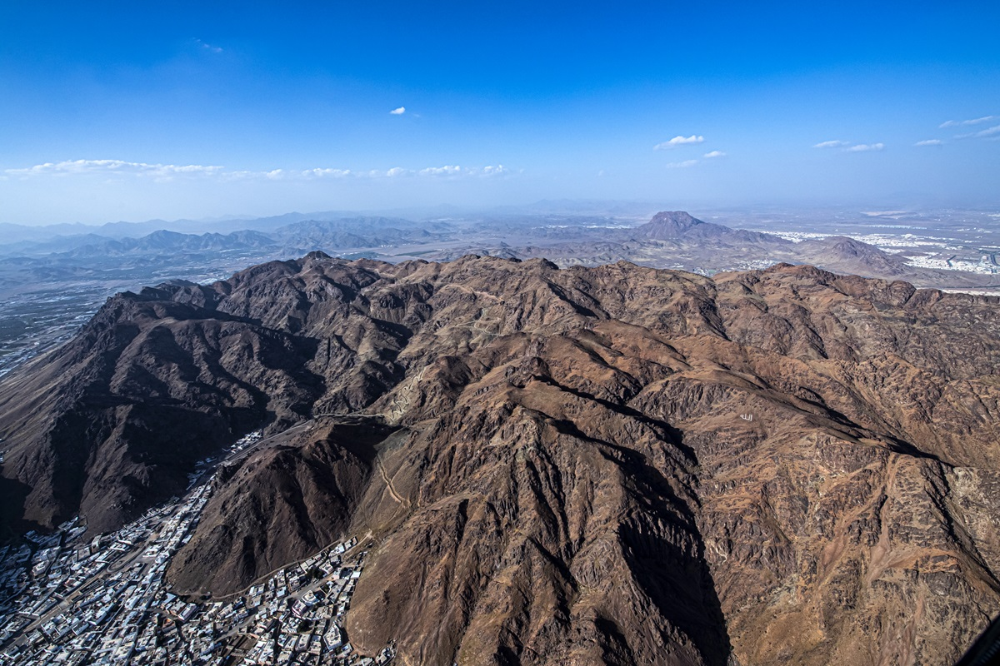

Madinah · Ziyarat Guide
Mount Uhud & the Martyrs of Uhud — History, Virtues & Visiting Guide

About 5 km north of Masjid an-Nabawi stretches a long ridge of red rock, some seven kilometres from end to end: Mount Uhud. No mountain on earth is loved the way this one is loved — and the plain at its foot holds one of the hardest days in the Seerah, the Battle of Uhud, and the graves of seventy of the finest of the Companions. Pilgrims come here on almost every Madinah stay. Be clear about its place, as with all ziyarat: visiting Uhud is voluntary, not a rite of Umrah. There is no permit, no ticket and no prescribed ritual — only history, grief, gratitude and lessons that still speak. Our Madinah Ziyarat Guide shows where an Uhud visit fits into your days in the city.
The Battle of Uhud — Shawwal, 3 AH: A year after their defeat at Badr, the Quraysh of Makkah marched on Madinah with an army of about 3,000 men. The Prophet ﷺ went out to meet them beneath Uhud with about 700 men, after Abdullah ibn Ubayy and his followers turned back on the road. The Muslims took the high ground, with the mountain guarding their backs — and at first, the day was theirs: the Quraysh line broke and their camp was overrun. Then came the moment the whole visit turns on.
The archers' lesson: Before the battle, the Prophet ﷺ stationed fifty archers on a small hill guarding the pass, under Abdullah ibn Jubayr (RA), with an order that could not have been plainer. Al-Bara (RA) narrated that the Prophet ﷺ told them: "Do not leave this place; if you should see us conquering the enemy, do not leave this place, and if you should see them conquering us, do not come to help us" (Sahih al-Bukhari 4043). When the enemy fled, most of the archers went down for the spoils, against their commander's reminder. Khalid ibn al-Walid — not yet a Muslim — led the Quraysh cavalry through the empty pass and fell on the Muslims from behind. The day reversed in minutes. The Qur'an itself addresses that moment: "…until you lost heart and disputed about the matter and disobeyed, after He had shown you what you loved" (Qur'an 3:152). The hill is still there, and the lesson with it: a clear command set aside for a moment's gain can undo everything.
Hamza and the seventy: Seventy Muslims were martyred that day. Among them was Hamza ibn Abd al-Muttalib (RA), the Prophet's ﷺ uncle and foster-brother, struck down by the spear of Wahshi — remembered ever since as Sayyid al-Shuhada, the Master of the Martyrs. With him fell Mus'ab ibn Umayr (RA), the standard-bearer, and Abdullah ibn Jubayr (RA) himself, who died at his post with the few archers who stayed. The martyrs were buried where they fell, at the foot of Uhud, and the Prophet ﷺ returned in later years to visit them and pray for them — which is why the visit you are making is one he made first.
What you will see today:
- The mountain itself — the long, red, bare ridge filling the northern horizon. The visit is made at its foot; the main mountain has no visitor path and climbing it is not part of the visit.
- The Martyrs' Cemetery (Shuhada Uhud) — the enclosed graveyard on the plain where Hamza (RA) and the seventy rest. Visitors stand outside the fence, greet the martyrs with salam and make du'a for them, looking across to the mountain they died beneath.
- The Archers' Hill (Jabal al-Rumah) — the small hill opposite the cemetery, where the fifty archers stood. Visitors climb it — a short, easy climb — for the view across the whole battlefield: cemetery below, mountain behind, the pass the cavalry came through plain to see.
- Masjid Sayyid al-Shuhada — the large mosque beside the cemetery, named in honour of Hamza (RA); pray your regular prayers here if the time comes in.
- Masjid al-Mustarah — on the road back towards the city, marking the place where the Prophet ﷺ rested and prayed on his return from the battle, wounded, carrying the day's grief with him.
Visiting etiquette:
- Greet them as the Prophet ﷺ taught us to greet the people of the graves — with salam and du'a for their forgiveness and wellbeing, and a moment's thought for your own return to Allah. The counterpart visit in the city is Jannatul Baqi, and the two belong to the same spirit.
- No prayer is prescribed at the graves themselves. Make du'a standing at the fence; offer your prayers in the mosque.
- Take nothing and leave nothing: no soil, no stones, no rubbing of the fence or the ground, no writing on the rocks. Keep the plain clean.
- Keep it quiet. This is a graveyard before it is a landmark — lower your voice, and keep group talks brief and away from the fence where others are making du'a.
Practical tips: Uhud lies about 5 km north of the Prophet's Mosque — ten to fifteen minutes by car. There is no permit, ticket or booking of any kind; you simply go. Most pilgrims fold it into one Madinah ziyarat round with Masjid Quba and Masjid Qiblatain — a hired car for the full Madinah round typically costs about SAR 150–200 per vehicle at 2026 operator fares, agreed before you set off. Go in the early morning or late afternoon: the plain has almost no shade, and the midday heat on open rock is severe. Allow 45 minutes to an hour — time at the cemetery, a climb up the Archers' Hill, and a quiet look at the mountain before you leave.
Quick questions:
- Do I need a permit to visit Mount Uhud? No. There is no permit, ticket or Nusuk booking for Uhud — it is an open ziyarat site about 5 km north of the Prophet's Mosque. Simply travel there, visit the martyrs' cemetery and the Archers' Hill, and make du'a.
- Who is buried at Uhud? The seventy martyrs of the Battle of Uhud (3 AH), among them Hamza ibn Abd al-Muttalib (RA), the Prophet's ﷺ uncle, known as the Master of the Martyrs; Mus'ab ibn Umayr (RA); and Abdullah ibn Jubayr (RA), commander of the archers. They lie in the enclosed cemetery at the foot of the mountain, and visitors greet them from outside the fence.
- Can I climb Mount Uhud? The visit centres on the cemetery and the small Archers' Hill opposite it, which visitors climb for the view over the battlefield. The main ridge of Uhud has no visitor path, and climbing it is not part of the visit — the mountain is honoured from below, where the martyrs lie.
Sources: Sahih al-Bukhari 4083 · Sahih al-Bukhari 4043 · Qur'an 3:152 · Sahih al-Bukhari 4083 — Sunnah.com ↗ · Mount Uhud — Makkah Live ↗ · Ziyarat taxi fares as published by Madinah operators, November 2026